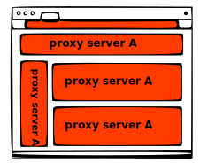
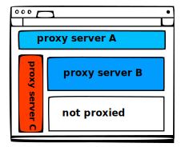

No Servers!Before anything you have to define
proxy servers.
Loading...
General Options
Smart Features
Firefox only! Unfortunately this feature is not
supported by Chrome.

Proxy
per tab/origin enabled

Proxy
per tab/origin disabled
🔐 Private Browsing Profile
Select a private browsing profile if you want to force it to be used when tab/window
is in Private Browsing mode. This option will override the active profile.
Firefox only! Unfortunately this feature is not
supported by Chrome.
Syncing
Error Detection
Themes
Url must be 'Https'. Be aware of imported fonts and other styles in the
following custom style, they can block/slow down the Popups in your browser. You
can try themes from bootswatch.com but be aware of their google fonts
dependency.
Url must be 'Https'. Be aware of imported fonts and other styles in the
following custom style, they can block/slow down the Popups in your browser. You
can try themes from bootswatch.com but be aware of their google fonts
dependency.
Other Settings
Proxy Servers
Default Proxy Server:
Manage your proxy servers:
Here is the list of proxy servers. You can define as many proxy as you want and switch
between then from
toolbar.
In this profile no proxy is applied unless you define smart rules. You will define black
listed rules or in other words rules to apply proxy.
In this profile proxy servers are always applied define smart rules and skip them. You
will define white listed rule or in other words rules to skip proxy and do not apply
proxy.
Ignore failure detection for these domains by adding rules.
Profile Proxy Server:
(While using this profile, this is going to be the active proxy server)
Rules
Rules Subscriptions
Here you can subscribe to rules lists.
Add Multiple Rules
(Use new line to separate entries)
(Servers with authentication are not supported in Chrome)
Import Rules
Proxy Server Subscriptions
Manage proxy server subscriptions:
Here you can subscribe to proxy lists and switch between the proxies later. Please note that
long lists may
cause failure in syncing data between devices.
Backup/Restore
You can make either full or partial backup of your settings.
Make a full backup of the options (including proxy servers and rules).
Restore your previously taken backup from a local file
Import/Export individual list of proxies servers.
Reset everything. This will remove all rules and proxy servers and reset
the options.
Permanently.
Brought to you by Salar Khalilzadeh ,
Proxy Server Details
(Unfortunately proxy server
authentication is no longer supported by chrome through extensions api. This is "on
purpose".)
Import Proxy
List
Keyboard shortcuts
List of shortcuts
Welcome to SmartProxy
Welcome! I'm glad that you have chosen SmartProxy, the smart proxy switcher.
Please follow these steps to get started:
Add a Proxy Server
(Head to Proxy Servers tab and add a proxy server there)
Set proxy mode to Smart Proxy mode
(Use toolbar popup menu to change the active mode to Smart Proxy)
Define Proxy Rules
(Use toolbar popup menu to add rules or add/modify rules from Proxy Rules
tab)